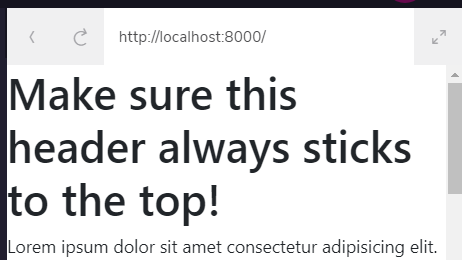

Bootstrap 4 Learning Note Part 2
Hi 👋 and welcome to part 2 of my learning Notes from bootstrap 4 on codecademy the first part of the note had talked about the fundamentals of bootstrap 4 grid which includes : bootstrap 4 introduction, column width with content, breakpoints , bootstrap 4 naming convention ,grid and combining bootstrap 4 classes.
Part 2 Notes
This part of the note focuses on utility classes in bootstrap 4 , the course had referred heavily on Bootstrap Documentation . The utility classes provides additional styling and components.
Adding Colors
The color utility class provides us with the means to change elements color easily within the tag itself an example was given in the course as below:
<p class="text-primary"> This text is blue!</p>the above code shows that the paragraph element should be made blue , now I was wondering why blue? as with plain CSS where you would probably do something like this:
xxxxxxxxxxp{color:red;}with bootstrap we just provide and add a preset bootstrap 4 color. The instructor pointed out that the text property of class="text-primary" just:
targets the element’s text styling. Appending
"primary"after"text"changes the text color to blue.
some other preset colors can be gotten from the bootstrap 4 documntation. In addition to the color utility bootstrap 4 also provides background color utility , with pure CSS to change the background color of an element will look something like this:
xelement{ background-color: green;}in the code above element could be any valid html element e.g p ,div, section e.t.c. Bootstrap 4 has completely simplified the above as this can be achieved directly from the element , here is an example from the course:
xxxxxxxxxx<div class="bg-success" > Green! This signifies success</div>from the code above the utility class bg-success simply changes the div background to green right inside the div element itself , how 😎 is that?.
As usual the course had given some interactive practice exercises to close the lesson.
Styling Text
Bootstrap 4 has an amazing collection of classes to style and format text , due to its exhaustive list the course only elaborated on some few which are
font-weight class and text-uppercase
font-weight-[predefined bootstrap value] this value could be bold,light,lighter e.t.c an example from the course is given below:
xxxxxxxxxx<p class="font-weight-bold"> This rendered text is bold.</p>
xxxxxxxxxx<p class="font-weight-bold text-uppercase"> This rendered text is both bold and uppercased. </p>when we look closely at the above we had combined two classes font-weight-bold and text-uppercase. The bootstrap documentation has provided a lot of this helper classes.
Element Positioning:
wow bootstrap 4 also provide amazing positioning utility classes position-fixed, position-absolute, position-relative, position-sticky, position-static e.t.c as provided by the bootstrap 4 documentation for the course we had utilized fixed-top for position which goes something like this:
xxxxxxxxxx<div class="fixed-top"> This div will be fixed at the top of the screen. </div>the above code will fix that div at the top of the document viewport, it works like setting the position property of an element in css to fixed,
Note there is a difference between fixed-top and sticky-top
fixed topremains fixed at the top but the rest of the otherdivsbegins right underneath the fixed element but
sticky top the rest of the element flows right beneath the sticky element something like so 👇

Source: Codecademy
Notice the difference ? the former the content reflows underneath while the latter the content starts right beneath the fixed header.
After the explanation and example the instructor had given a hands on classwork.
The Navigation Component:
when I first heard the nav component I was mistaking a nav component for a navbar...this two are closely related , a nav component offers a user a selection of links on one or few pages of a website while a navbar component appears on all pages of a website.
a nav component in bootstrap 4 is made of 3 classes(nav , nav-item and nav-link) or at least 2 classes (nav-item,nav-link) examples will be shown below from the course
xxxxxxxxxx<ul class="nav"> <li class="nav-item"> <a class="nav-link" href="#">First Link</a> </li> <li class="nav-item"> <a class="nav-link" href="#">Second Link</a> </li> </ul>
what we simply did above was to give the ul element a class of nav this automatically turns the ul element to a bootstrap nav component. Amazing right? 😃 . we talked about a nav component having the 3 essential classes nav , nav-item and nav-link as indicated in the code sample above. the course had further referred us to get more information from the bootstrap 4 documentation. The instructor didn't leave us without an activity as usual ,this is one very interesting thing about this platform it's interactivity.
The Button Component
bootstrap 4 provides a super amazing way to format html buttons , we had taken a sample exercise from the bootstrap 4 documentation and customized to our preference a sample from the course is shown below:
xxxxxxxxxx<button type="button" class="btn btn danger">Danger</button>the sample code above defines 3 classes on the button element namely :
btnwhich provides the Bootstrap 4 default button stylingbtn-dangerwhich turns the button red and conveys it's purpose
I actually went a step further to checkout the bootstrap documentation on buttons and discovered other bootstrap default button classes such as btn-info , btn-success structured to give User experience meaning for success and information. With an hands on interactive activity we had concluded this sub topic on button component.
Collapsing a component
Have you ever thought of a moment to display something on a webpage but you really don't feel it should compulsorily appear on the page except when needed ? this should take quite some lines of code but bootstrap 4 has made it easy!!
To achieve this we need two components , the element with the content and the other that switches the visibility of the element .I know it's quite a lengthy explanation I felt that bored when I approached collapsing components too .Let's take a look at an example given from the course .
xxxxxxxxxx <!--Section A--><button class="btn btn-primary" type="button" data-toggle="collapse" data-target="#collapseExample" aria-expanded="false" aria-controls="collapseExample"> This button controls the following div's visibility. </button> <!-- Section B--><div class="collapse" id="collapseExample"> <p>This content's visibility gets toggled</p></div>
okey since we have a code above it's easier to explain now as done by the course the button element is the controller of the <p> element in Section B the button gained the toggle ability from the data-toggle attribute with value of collapse notice that we have data-target with value #collapseExample.It says simply collapses the div with collapseExample . The course has also referred us to the Bootstrap 4 documentation for more collapse functionalities and as usual an interactive class activity was given.
Creating a Navbar
navbars are very important components of a webpage but it can sometimes become daunting , but alas bootstrap 4 has made it pretty easy to create it's quite elaborate to explain as shown by the course ,lets take a sample example from the bootstrap 4 documentation and customize it .
xxxxxxxxxx<nav class="navbar navbar-expand-lg navbar-light bg-light"> <a class="navbar-brand" href="#">Brand Goes Here</a> <button class="navbar-toggler" type="button" data-toggle="collapse" data-target="#navbarSupportedContent" aria- controls="navbarSupportedContent" aria-expanded="false" aria-label="Toggle navigation"> <span class="navbar-toggler-icon"></span> </button> <div class="collapse navbar-collapse" id="navbarSupportedContent"> <ul class="navbar-nav"> <li class="nav-item active"> <a class="nav-link" href="#">Current Page Link <span class="sr-only">(current)</span></a> </li> <li class="nav-item"> <a class="nav-link" href="#">Another Page Link</a> </li> </ul> </div></nav>oops that's a lot of code so I said to myself too when I first took a glance at it.
The course had explained that the navbar class makes the <nav> element a bootstrap 4 navbar , the navbar-expand-lg renders <div class="collapse navbar-collapse"> on large and extra large screens .
it is simply saying when the page is in large screen or extra large screen collapse the navbar and display the nav button
notice we have lg this is the breakpoint of that div element this could be sm ,md ,lg or xl
you will also notice the bg-light class this essentially renders the background to bootstrap 4 default of white.
The navbar-brand class represents the brand/logo of the website. The visibility of the navbar is toggled each time navbar-expand-{breakpoint} renders .Now when navbar-brand button is toggled on it expands the navbar and displays the links.
The ul and <li> elements make up a nav component. and as usual an interactive hands on classwork was given.
Jumbotron Component
on hearing of this component I quickly recalled a popular fiction movie 'Voltron' (the defender of the universe) , why did I remember voltron the fiction star ? because he always stands out. The jumbotron element also helps make content stand out. The course had given an example of a display board in a stadium for instance that shows an event for everyone in the crowd to see. an example was given in the course below:
xxxxxxxxxx<div class="jumbotron"> <h1>Wow this stands out!</h1></div>the course had used an <h1> element but this could be any html5 element you wish to display to stand out!!! thankfully the course had pointed us to the documentation for more elaborate examples.
Adding a Card
The course also went ahead to introduce the card component as a container for smaller customized content.
This helps to display a collection of similar content in manageable chunks
~learn Bootstrap 4 @codecademy
Let's look at the example given from the course below:
xxxxxxxxxx<div class="card"> <img class="card-img-top" src="placeholder.jpg" alt="card example image"> <div class="card-body"> <h5 class="card-title">Card title</h5> <p class="card-text">Card description goes here.</p> <a href="#" class="card-link">Link to somewhere.</a> </div></div>essentially notice we have 6 classes used above to create a card component , the container class of card image element with the class card-img-top essentially tells the browser this is a bootstrap card image placed at the top , the card-body defines a new section for the card with subsection of card-title ,card-text and card-link the course referred students to the documentation for more customization options.
The Carousel Component
Bootstrap 4 has done amazingly in giving us the ability to fit our images into a slideshow using Bootstrap's carousal component. the course had selected a basic example for simplicity sake which is shown below:
xxxxxxxxxx<div id="carouselExampleSlidesOnly" class="carousel slide" data-ride="carousel"> <div class="carousel-inner"> <div class="carousel-item active"> <img class="d-block w-100" src="example_slide_1.png" alt="First slide"> </div> <div class="carousel-item"> <img class="d-block w-100" src="example_slide_2.png" alt="Second slide"> </div> </div></div>The code above renders a slideshow that loops through two images, which displays one at a time.
the parent <div> element has an id of carouselExampleslidesonly this helps us to uniquely target that particular div when manipulating the DOM to change the click events, the carousel and slide classes provides the styling of the carousel interestingly the data-ride rides us 😄 through interactively when the slides transitions.
the second div provides the inner elements of the carousel with a class of carousel-inner this houses the other carousel items
only one image needs the active class as shown above ,if none have active , no images are shown
~Learn Bootstrap 4 @codecademy
the <img> elements use the utility classes d-block which sets the display as block and w-100 to take up 100% of the width. an interactive classwork was given to test our assimilation.
This marks the end of the bootstrap 4 course on codecademy!!!
What Next ?
As part of my learning goals in part 1 of this series I had stated I was going to build a website using the new found knowledge , I was able to build a website using bootstrap 4 here , ain't that amazing ? 🍷 🍾
Glossary
This is a list of new terms learnt
- Jumbotron : a display component in bootstrap that acts more like a big sign board
- bg: this defines the background of an element, this can help change the background color of an element
- carousel : a slideshow component that holds pictures in bootstrap
CheatSheet
This covers most of the commands covered in this note .
Adding Colors
xxxxxxxxxx class="text-primary"Styling Text
xxxxxxxxxx font-weight-[predefined bootstrap value]Element Positioning
xxxxxxxxxx class="fixed-top"The Navigation Component
xxxxxxxxxx class="nav"The button component
xxxxxxxxxx class="btn btn danger"Collapsing component
xxxxxxxxxx class="btn btn-primary" type="button" data-toggle="collapse" data- target="#collapseExample" aria-expanded="false" aria-controls="collapseExample" class="collapse" id="collapseExample"Creating a Navbar
xxxxxxxxxx class="navbar navbar-expand-lg navbar-light bg-light" class="collapse navbar-collapse" id="navbarSupportedContentJumbotron Component
xxxxxxxxxx class="jumbotron"Adding a Card
xxxxxxxxxx class="card"The Carousel Component
xxxxxxxxxx class="carousel slide" data-ride="carousel"
Thank you!!!